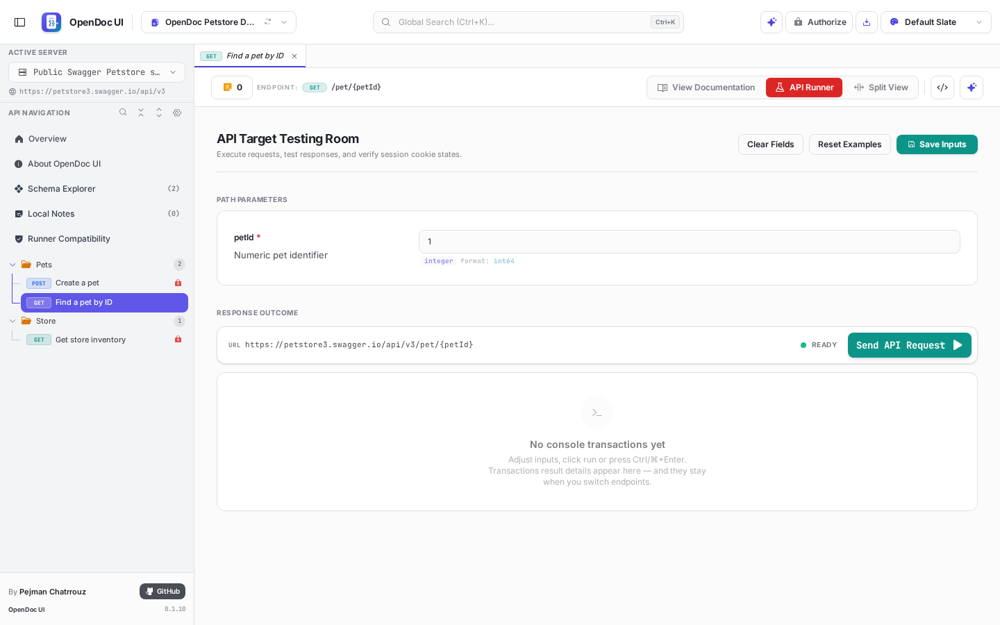
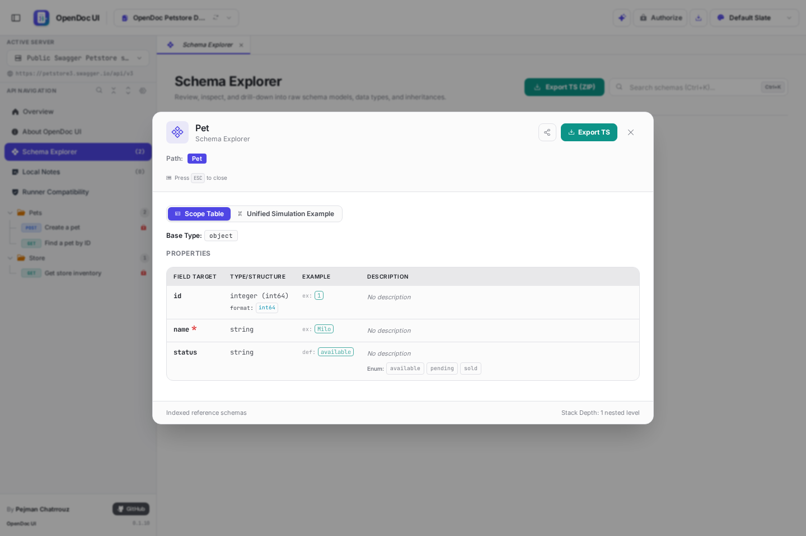
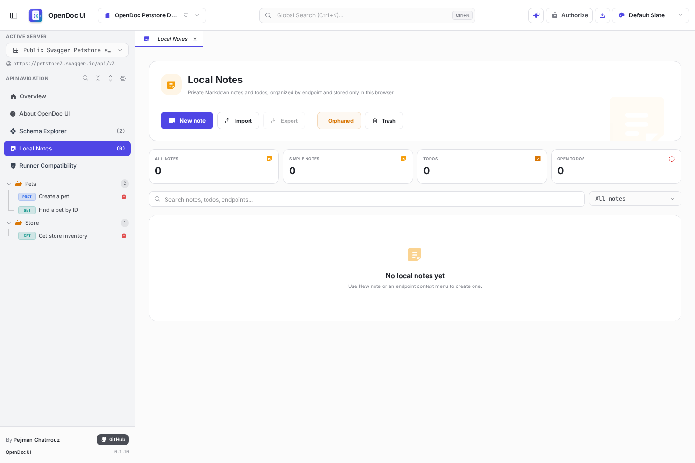

What it does, why it matters, and how it changes the way you work with APIs. Each surface below is live in the demo — nothing here is a mockup of a roadmap.
Any OpenAPI 3.0/3.1/3.2 or Swagger 2.0 document becomes a fully navigable reference. Endpoints group by tag into a sidebar tree that respects your sorting, route-display, protection and deprecation preferences — a large specification becomes an orderly index rather than an overwhelming list.
#response-200.
Documentation is passive; the Runner is active. Execute genuine requests from the browser against the servers declared in your specification — the gap between reading an endpoint and calling it disappears.

Inspect every schema in the document to any depth. The hard cases — deeply nested objects, recursive trees, mutually referencing schemas, polymorphic discriminators — render safely, and modern 3.1/3.2 keywords are handled explicitly.
const, prefixItems, unevaluatedProperties, if/then/else, type unions and webhooks.
Keep private Markdown notes and todos beside any endpoint — knowledge that belongs to you, not the spec. Fourteen translucent, theme-safe tones keep them readable in every palette.

fetch / axios / Angular snippets plus TypeScript models generated from your schemas — secret-redacted and downloadable as a zip.
curl · fetch · axios · types.tsGrounded answers from retrieved, redacted endpoint/schema context with clickable source citations. Swagger/REST skill packs, per-spec saved conversations, and Runner handoff.
direct provider · hardened gatewayOverview, search, schema explorer, about and assistant open as tabs beside endpoints — preview/pin, close, reorder, middle-click, context menu. Like an IDE, because it is one.
tabs · split view · deep linksCtrl/⌘ + K searches paths, summaries, tags and schema definitions, with method/tag/security filters synced with the sidebar.
15+ hand-picked palettes with per-spec memory and light / dark / system modes. Notes, badges and code views stay legible in every one.
Move endpoints into a muted folder without touching the OpenAPI source — unhide individually or restore all from navigation settings.
An honest, per-endpoint matrix of what the browser can and cannot do for a given API — CORS constraints, credentialed requests and cookie behavior, stated before you waste a minute.
Remote specs cache in IndexedDB and revalidate with If-None-Match / If-Modified-Since. One button drops the cache and re-fetches — or re-reads your local file from disk.
Every file you open and every remote URL you load lands in a persistent, browser-local history — reopen yesterday's spec in one click, no re-upload.